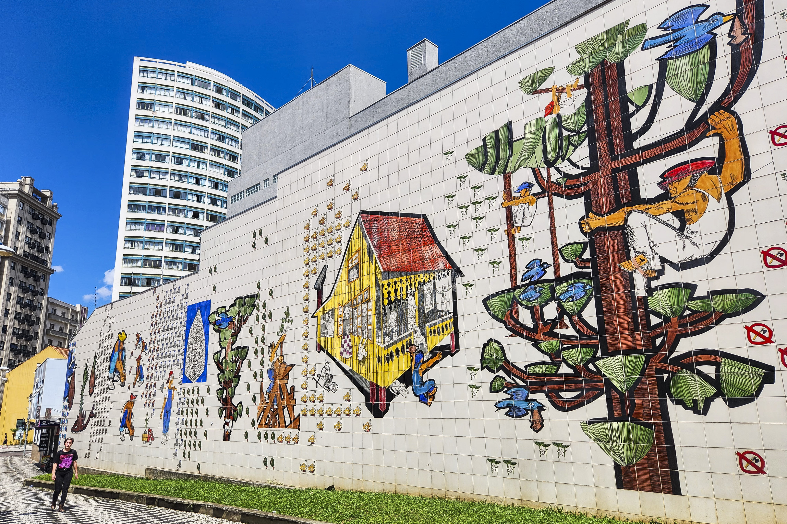
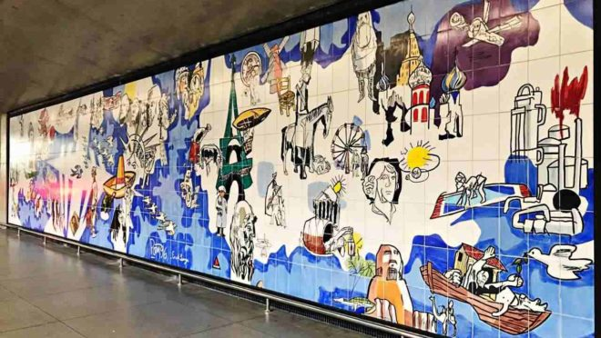
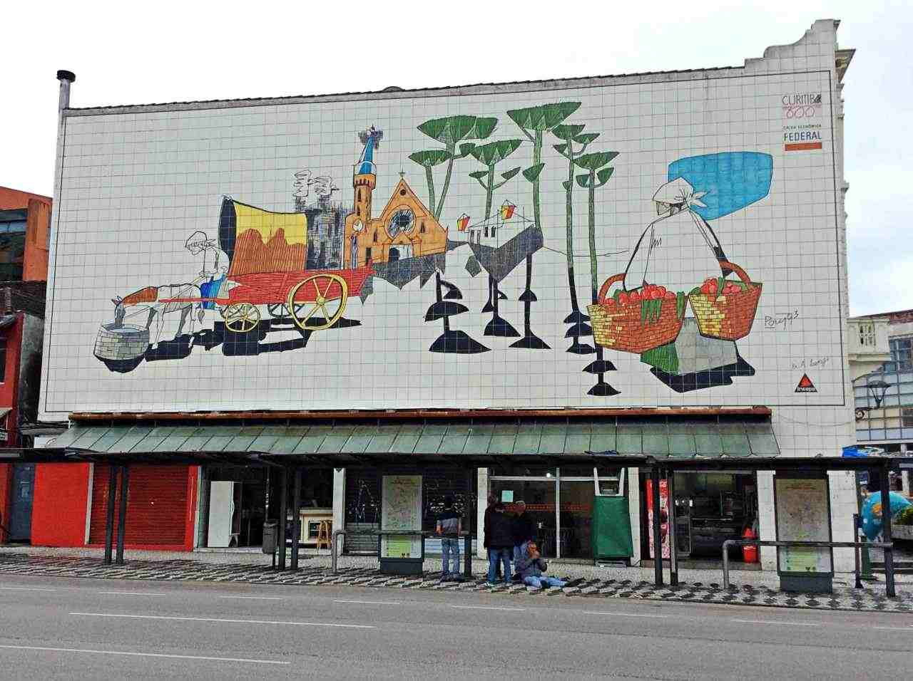

SEJAM BEM VINDOS A O MEU SITE
falando sobre o artista que abraçou Curitiba

IMPORTANCIA CULTURAL
porque poty foi importante para a cultura

COLOUE UM TÍTULO AQUI.
Poty Lazzarotto é essencial para a identidade cultural paranaense por transformar o cotidiano, a história e as paisagens do estado em crônicas visuais públicas. Suas obras retratam o povo trabalhador, as araucárias e as tradições locais, tornando-se parte viva da paisagem urbana e patrimônio oficial do Paraná.
